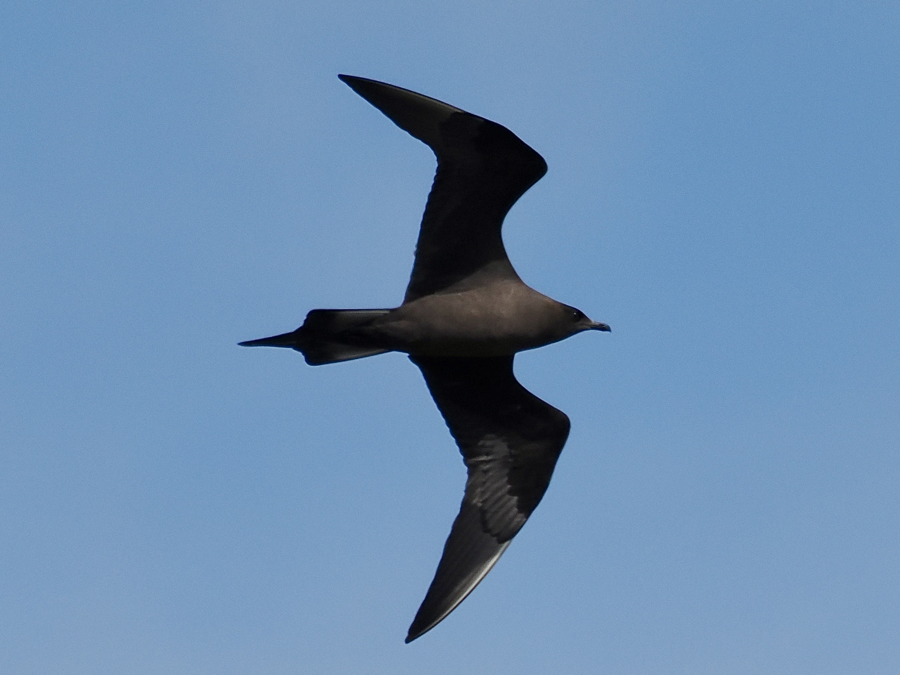
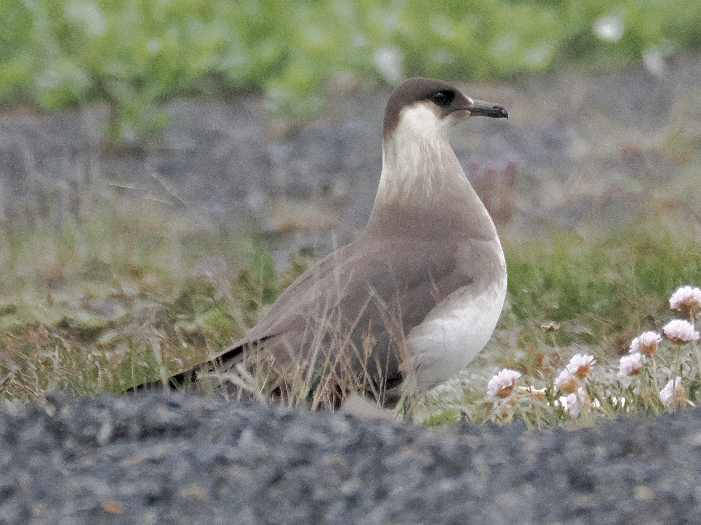

Parasitic Jaeger
Stercorarius parasiticus
Other names: Arctic Skua
Order: Charadriiformes
Family: Stercorariidae

A gull-like seabird with tail streamers. Dark morph is entierly dark brown. A predator of small birds and eggs, known for forcing seabirds to disgorge their food and taking it for itself (kleptoparasitism).

Light morph has a brown cap and back, and pale neck and belly. There are intermediate morphs which have intermediate plumage. Who said they only eat other birds' food? This one is seen gorging on a salad wrap.